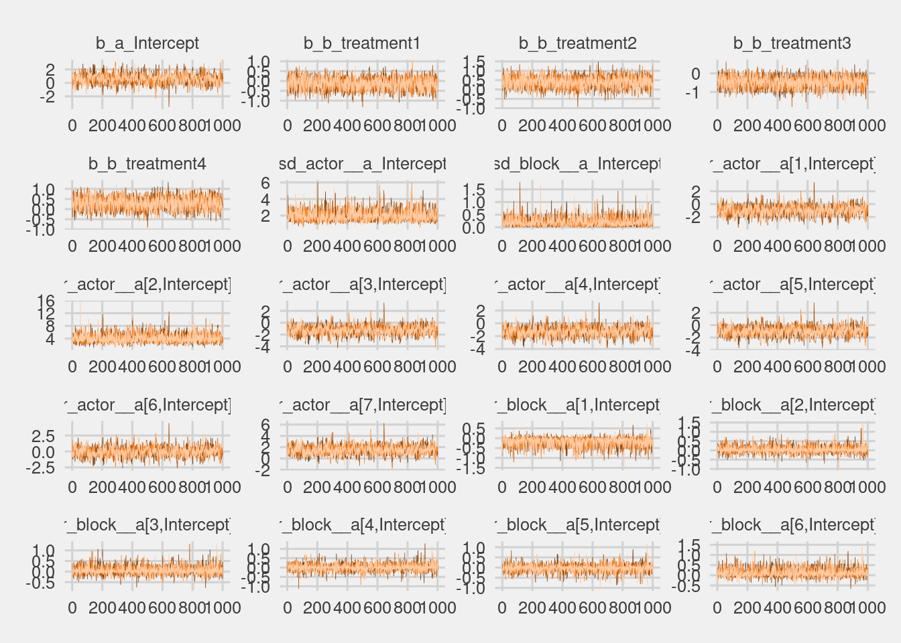
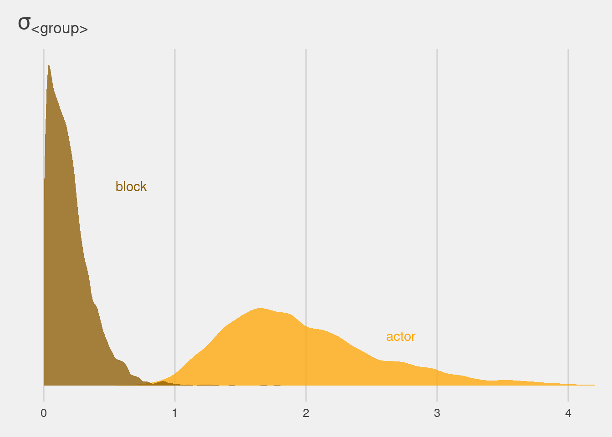

12.3 More than one type of cluster
We can use and often should use more than one type of cluster in the same model. Each pull is within a cluster of pulls belonging to an individual chimpanzee. But each pull is also within an experimental block, which represents a collection of observations that happened on the same day.
Experiment with a small number of chimps. Replicated on each. 4 treatments with prosocial option. Question is do they intepret it that way?
![Want to use it to learn how to build a more complex vasrying effects model when we have more than one type of cluster. Called cross-classfication. The indivdual chimps are cross-classified, as is experimental day. In this dataset everything is balanced. All the chimps in all the blocks. Going to use both these types of clusters. Actors is a clsuter so we can estimate parameters specific to the chimp, like handedness. Also have repeated observations inside blocks. You can just design them liek a varying intercept model.](slides/L16/03.png)
Want to use it to learn how to build a more complex vasrying effects model when we have more than one type of cluster. Called cross-classfication. The indivdual chimps are cross-classified, as is experimental day. In this dataset everything is balanced. All the chimps in all the blocks. Going to use both these types of clusters. Actors is a clsuter so we can estimate parameters specific to the chimp, like handedness. Also have repeated observations inside blocks. You can just design them liek a varying intercept model.
13.3.1. Multilevel chimpanzees

Here’s the MLM with both actor and block intercepts. Alpha for each actor, gamma for each block, and beta for each treatment. Ordinary fixed effects, regularising, not adaptive. Just like tank effects. Interpretation is the handedness. Adaptive prior, with alpha bar. And a sigma alpha. So the model will learn the prior from the data.

Then another adaptive prior, gamma for each block. It’s conditional on each parameter. No gamma bar. You could put it there, but it would be redundant. Could just put a 0 there. Hyperpriors at the bottom. Blue bits are the block. You can extend this strategy for as many cluster types as you like.
![Just a logistic regression with a bunch of stuff. `a[actor]`.](slides/L16/06.png)
Just a logistic regression with a bunch of stuff. a[actor].
In this case, you should see a warning about DIVERGENT TRANSITIONS. In the next section, I’ll show you how to fix this. For now, we can keep moving and interpret the posterior.

a for each actor. Vector of those. They each have a common prior, with two parameters inside it. Conditional on other parameters (which makes it adaptive.) Then at the bottom it gives it shape.

Same thing for blocks. Block in the model, black adaptive prior, then sigma.
This is easily the most complicated model we’ve used in the book so far. So let’s look at the posterior and take note of a few important features:
data(chimpanzees, package = "rethinking")
d <- chimpanzees
rm(chimpanzees)
d <-
d %>%
mutate(actor = factor(actor),
block = factor(block),
treatment = factor(1 + prosoc_left + 2 * condition))
glimpse(d)## Rows: 504
## Columns: 9
## $ actor <fct> 1, 1, 1, 1, 1, 1, 1, 1, 1, 1, 1, 1, 1, 1, 1, 1, 1, 1, 1, …
## $ recipient <int> NA, NA, NA, NA, NA, NA, NA, NA, NA, NA, NA, NA, NA, NA, N…
## $ condition <int> 0, 0, 0, 0, 0, 0, 0, 0, 0, 0, 0, 0, 0, 0, 0, 0, 0, 0, 0, …
## $ block <fct> 1, 1, 1, 1, 1, 1, 2, 2, 2, 2, 2, 2, 3, 3, 3, 3, 3, 3, 4, …
## $ trial <int> 2, 4, 6, 8, 10, 12, 14, 16, 18, 20, 22, 24, 26, 28, 30, 3…
## $ prosoc_left <int> 0, 0, 1, 0, 1, 1, 1, 1, 0, 0, 0, 1, 0, 1, 0, 1, 1, 0, 1, …
## $ chose_prosoc <int> 1, 0, 0, 1, 1, 1, 0, 0, 1, 1, 0, 0, 0, 1, 1, 1, 0, 1, 1, …
## $ pulled_left <int> 0, 1, 0, 0, 1, 1, 0, 0, 0, 0, 1, 0, 1, 1, 0, 1, 0, 0, 1, …
## $ treatment <fct> 1, 1, 2, 1, 2, 2, 2, 2, 1, 1, 1, 2, 1, 2, 1, 2, 2, 1, 2, …b13.4 <-
brm(data = d,
family = binomial,
bf(pulled_left | trials(1) ~ a + b,
a ~ 1 + (1 | actor) + (1 | block),
b ~ 0 + treatment,
nl = TRUE),
prior = c(prior(normal(0, 0.5), nlpar = b),
prior(normal(0, 1.5), class = b, coef = Intercept, nlpar = a),
prior(exponential(1), class = sd, group = actor, nlpar = a),
prior(exponential(1), class = sd, group = block, nlpar = a)),
iter = 2000, warmup = 1000, chains = 4, cores = 4,
seed = 13,
file = "fits/b13.04")Check the trace plots:
bayesplot::color_scheme_set("orange")
post <- brms::posterior_samples(b13.4, add_chain = T)
post %>%
bayesplot::mcmc_trace(pars = vars(-iter, -lp__),
facet_args = list(ncol = 4),
size = .15) +
theme(legend.position = "none")
print(b13.4)## Family: binomial
## Links: mu = logit
## Formula: pulled_left | trials(1) ~ a + b
## a ~ 1 + (1 | actor) + (1 | block)
## b ~ 0 + treatment
## Data: d (Number of observations: 504)
## Samples: 4 chains, each with iter = 2000; warmup = 1000; thin = 1;
## total post-warmup samples = 4000
##
## Group-Level Effects:
## ~actor (Number of levels: 7)
## Estimate Est.Error l-95% CI u-95% CI Rhat Bulk_ESS Tail_ESS
## sd(a_Intercept) 1.98 0.63 1.08 3.52 1.00 1612 2195
##
## ~block (Number of levels: 6)
## Estimate Est.Error l-95% CI u-95% CI Rhat Bulk_ESS Tail_ESS
## sd(a_Intercept) 0.20 0.17 0.01 0.62 1.00 1450 1567
##
## Population-Level Effects:
## Estimate Est.Error l-95% CI u-95% CI Rhat Bulk_ESS Tail_ESS
## a_Intercept 0.60 0.71 -0.83 2.07 1.01 999 1494
## b_treatment1 -0.14 0.30 -0.74 0.43 1.00 2000 2559
## b_treatment2 0.39 0.30 -0.20 0.97 1.00 2189 3051
## b_treatment3 -0.48 0.30 -1.06 0.09 1.00 2094 2688
## b_treatment4 0.28 0.30 -0.29 0.88 1.00 2113 2765
##
## Samples were drawn using sampling(NUTS). For each parameter, Bulk_ESS
## and Tail_ESS are effective sample size measures, and Rhat is the potential
## scale reduction factor on split chains (at convergence, Rhat = 1).posterior_summary(b13.4) %>% round(digits = 2)## Estimate Est.Error Q2.5 Q97.5
## b_a_Intercept 0.60 0.71 -0.83 2.07
## b_b_treatment1 -0.14 0.30 -0.74 0.43
## b_b_treatment2 0.39 0.30 -0.20 0.97
## b_b_treatment3 -0.48 0.30 -1.06 0.09
## b_b_treatment4 0.28 0.30 -0.29 0.88
## sd_actor__a_Intercept 1.98 0.63 1.08 3.52
## sd_block__a_Intercept 0.20 0.17 0.01 0.62
## r_actor__a[1,Intercept] -0.96 0.72 -2.42 0.47
## r_actor__a[2,Intercept] 4.08 1.35 2.01 7.29
## r_actor__a[3,Intercept] -1.26 0.73 -2.75 0.17
## r_actor__a[4,Intercept] -1.26 0.73 -2.71 0.19
## r_actor__a[5,Intercept] -0.96 0.72 -2.38 0.49
## r_actor__a[6,Intercept] -0.01 0.72 -1.46 1.46
## r_actor__a[7,Intercept] 1.51 0.77 0.03 3.09
## r_block__a[1,Intercept] -0.16 0.22 -0.72 0.14
## r_block__a[2,Intercept] 0.04 0.18 -0.29 0.45
## r_block__a[3,Intercept] 0.05 0.18 -0.27 0.47
## r_block__a[4,Intercept] 0.01 0.18 -0.35 0.41
## r_block__a[5,Intercept] -0.03 0.17 -0.40 0.32
## r_block__a[6,Intercept] 0.11 0.20 -0.19 0.61
## lp__ -286.98 3.87 -295.39 -280.38![Run this model at home. WOn't encounter any problems. Plot the precis on the left. Treatment parameters. No new story here. Atraacted to the prosocial option, but not more when there's a partner. `a[2]` has a big intecetpt. Why such a wide marginal posterior for left? `g` are block effects. All very small, around 0. Which means there's not much variation among blocks. Then down the bottom we have alpha bar, which is lslightly left-handed. THen the two sigmas teell the same story. The variation among actor and block, you cna see the actors vary more, and the sigmas are picking them up. For actor, sigma of 2 is very big. sigma[g] is practically 0. Plotted the two densities for the sigma variables. The consequence of this is there's a lot more shrinkage among blocks. The actors had very little shrinkage, becuase lefty proves that indibvdiuals are indiviuals, with personality.](slides/L16/09.png)
Run this model at home. WOn’t encounter any problems. Plot the precis on the left. Treatment parameters. No new story here. Atraacted to the prosocial option, but not more when there’s a partner. a[2] has a big intecetpt. Why such a wide marginal posterior for left? g are block effects. All very small, around 0. Which means there’s not much variation among blocks. Then down the bottom we have alpha bar, which is lslightly left-handed. THen the two sigmas teell the same story. The variation among actor and block, you cna see the actors vary more, and the sigmas are picking them up. For actor, sigma of 2 is very big. sigma[g] is practically 0. Plotted the two densities for the sigma variables. The consequence of this is there’s a lot more shrinkage among blocks. The actors had very little shrinkage, becuase lefty proves that indibvdiuals are indiviuals, with personality.
mcmc_plot(b13.4, pars = c("^r_", "^b_", "^sd_")) +
theme(axis.text.y = element_text(hjust = 0)) Now use
Now use post to compare the group-level \(\sigma\) parameters:
post %>%
pivot_longer(starts_with("sd")) %>%
ggplot(aes(x = value, fill = name)) +
geom_density(size = 0, alpha = 3/4, adjust = 2/3, show.legend = F) +
annotate(geom = "text", x = 0.67, y = 2, label = "block", color = "orange4") +
annotate(geom = "text", x = 2.725, y = 0.5, label = "actor", color = "orange1") +
scale_fill_manual(values = str_c("orange", c(1, 4))) +
scale_y_continuous(NULL, breaks = NULL) +
ggtitle(expression(sigma["<group>"])) +
coord_cartesian(xlim = c(0, 4))
First, notice that the number of effective samples, n_eff, varies quite a lot across parameters. This is common in complex models. Why? There are many reasons for this. But in this sort of model a common reason is that some parameter spends a lot of time near a boundary. Here, that parameter is sigma_g. It spends a lot of time near its minimum of zero. Some Rhat values are also slightly above 1.00 now. All of this is a sign of inefficient sampling, which we’ll fix in the next section.
![Natural to ask then, should we even have varying intercepts on block. Doesn't matter. Leave them out and get the same inference. Nice feature of varying effects is if there's not much vasriation, not harmful to add varying effects. Here's the same model, but we've taken out the block effects entirely, but with varying intercepts on individuals, and can compare with WAIC or LOO, and see that they're very similar models. Effectively the same. Notice the parameter counts have a small difference. 2 effective parameter difference, even though it has 7 more parameters. Lots of machine learning works this way.](slides/L16/10.png)
Natural to ask then, should we even have varying intercepts on block. Doesn’t matter. Leave them out and get the same inference. Nice feature of varying effects is if there’s not much vasriation, not harmful to add varying effects. Here’s the same model, but we’ve taken out the block effects entirely, but with varying intercepts on individuals, and can compare with WAIC or LOO, and see that they’re very similar models. Effectively the same. Notice the parameter counts have a small difference. 2 effective parameter difference, even though it has 7 more parameters. Lots of machine learning works this way.
b13.5 <-
brm(data = d,
family = binomial,
bf(pulled_left | trials(1) ~ a + b,
a ~ 1 + (1 | actor),
b ~ 0 + treatment,
nl = TRUE),
prior = c(prior(normal(0, 0.5), nlpar = b),
prior(normal(0, 1.5), class = b, coef = Intercept, nlpar = a),
prior(exponential(1), class = sd, group = actor, nlpar = a)),
iter = 2000, warmup = 1000, chains = 4, cores = 4,
seed = 13,
file = "fits/b13.05")Compare WAICs
b13.4 <- add_criterion(b13.4, "waic")
b13.5 <- add_criterion(b13.5, "waic")
loo_compare(b13.4, b13.5, criterion = "waic") %>%
print(simplify = F)## elpd_diff se_diff elpd_waic se_elpd_waic p_waic se_p_waic waic se_waic
## b13.5 0.0 0.0 -265.6 9.6 8.6 0.4 531.2 19.2
## b13.4 -0.4 0.8 -266.0 9.7 10.5 0.5 532.1 19.4model_weights(b13.4, b13.5, weights = "waic") %>%
round(digits = 2)## b13.4 b13.5
## 0.4 0.6There is nothing to gain here by selecting either model. The comparison of the two models tells a richer story—whether we include block or not hardly matters, and the g and sigma_g estimates tell us why.
13.3.2. Even more clusters

Let’s add some more random effects. Synonym of varying effects. Rnadom has a tendency to interpret effects in a stronger way. Just a statistcal way to regularise inference. Source of clusters is irrelevant to whethr to add random effects or not. Wnat to regularise, but not adaptively. If you care about mroe accurate inferences, use adaptive priors. All we have ot do is add a sigma beta. Give it a parameter and we learn it.
One more sigma down the bottom. Run it and compare to the preivous. They’re basiclaly the same estimates. Why? Because there’s tonnes of data per treatment. It trims the posterior uncertainty a little bit, but doesn’t change the effective inference.
b13.6 <-
brm(data = d,
family = binomial,
pulled_left | trials(1) ~ 1 + (1 | actor) + (1 | block) + (1 | treatment),
prior = c(prior(normal(0, 1.5), class = Intercept),
prior(exponential(1), class = sd)),
iter = 2000, warmup = 1000, chains = 4, cores = 4,
seed = 13,
file = "fits/b13.06")
# Compare coefficients
tibble(parameter = str_c("b[", 1:4, "]"),
`b13.4` = fixef(b13.4)[2:5, 1],
`b13.6` = ranef(b13.6)$treatment[, 1, "Intercept"]) %>%
mutate_if(is.double, round, digits = 2)## # A tibble: 4 × 3
## parameter b13.4 b13.6
## <chr> <dbl> <dbl>
## 1 b[1] -0.14 -0.1
## 2 b[2] 0.39 0.4
## 3 b[3] -0.48 -0.43
## 4 b[4] 0.28 0.29And there is a lot of data in each treatment, so they don’t get pooled much in any event. If you compare model m13.6 with m13.4, using either WAIC or PSIS, you’ll see they are no different on purely predictive criteria. This is the typical result, when each cluster (each treatment here) has a lot of data to inform its parameters.
Compare group-level \(\sigma\) parameters with a plot:
posterior_samples(b13.6) %>%
pivot_longer(starts_with("sd")) %>%
mutate(group = str_remove(name, "sd_") %>% str_remove(., "__Intercept")) %>%
mutate(parameter = str_c("sigma[", group,"]")) %>%
ggplot(aes(x = value, y = parameter)) +
stat_halfeye(.width = .95, size = 1, fill = "orange", adjust = 0.1) +
scale_y_discrete(labels = ggplot2:::parse_safe) +
labs(subtitle = "The variation among treatment levels is small, but the\nvariation among the levels of block is still the smallest.") +
coord_cartesian(ylim = c(1.5, 3)) +
theme(axis.text.y = element_text(hjust = 0))
Now compare b13.6 with the last two models:
b13.6 <- add_criterion(b13.6, "waic")
brms::loo_compare(b13.4, b13.5, b13.6, criterion = "waic") %>%
print(simplify = F)## elpd_diff se_diff elpd_waic se_elpd_waic p_waic se_p_waic waic se_waic
## b13.5 0.0 0.0 -265.6 9.6 8.6 0.4 531.2 19.2
## b13.4 -0.4 0.8 -266.0 9.7 10.5 0.5 532.1 19.4
## b13.6 -1.0 0.8 -266.6 9.6 10.9 0.5 533.3 19.2model_weights(b13.4, b13.5, b13.6, weights = "loo") %>%
round(digits = 2)## b13.4 b13.5 b13.6
## 0.33 0.50 0.18